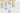

Project andromeda
From Rashed Karim Wiki
Design
- Mid-March 2014: Design document discussed with DSW
- Preparing a fresh linux ubuntu installation
- Installing FTP server
TG blueprints
Guideliines
- How the main guideline HTML file is processed when uploaded: 
- How index drop-down is populated in guideline entry in IRIS Bespoke
- How data flows in Guidelines page to populate main table in IRIS Bespoke
- How Guidelines are delete in the Generic IRIS
- How Guidelines are deleted in IRIS Bespoke
Apache, MySQL, Linux configurations
- I changed the home directory of the apache server using this method
- the settings file /etc/apache2/sites-available/default, change DocumentRoot and where it says <Directory ... >
- Hiding php extensions
- How to setup SSL in PHP
GIT
- Setup git and git init on wwwdev after commits, Drug can be edit v1.0, on local Dropbox and mamp_htdocs2,
- Exploring the best way to setup git workflow on production and development servers
- GIT setup for production and development servers
Prod and Dev Architecture
- Production and Development Architecture
- A simple overview of how the IRIS api is linked to Prod and Dev spaces on Contentful
DB tables
- User database
- Organization table
- User table
- id
- email-address
- password
- Authorized (Flag)
- Device-code (20 chars alphanumeric)
- User groups: Admin, content editor, consumer (only view)
- Content database (contentful)
- Guidelines table: title, created (date), authors (comma delimited),
version, document (pdf link)
- Directory table: name, department, bleep (number), telephone
(internal), telephone (external), information (html)
- Calendar table: Title, time and date (format date ISO), description
(e.g. every friday), information (html), internal event (boolean)
- Announcements: Message, description, originator (3 options: 1,2,3)
- Landing pages depending intranet and internet incoming IP. Admin
users from outside, rest inside
- Intranet login: 1) Admin and content-editor and consumer radio
button, 2) Admin and content-editor password. Consumer no password
- Inside the app, Users can now email issues within calendar,
directory and guidelines. System read emails, parse and notify admins on their homepage
Iris meetings
- [23 April 2014] The drawings made during meeting was scanned and a pdf can be found in mac: my web projects/andromeda/discussion on php.pdf
- [14 May 2014] The drawings made during meeting
- [2 April 2015] Meeting for two new apps
- [[12 Oct 2015] Quick meeting with SW before iRSUS goes live
CURL
- Check api-edit-directory for details on how to get, put and post. Post is for creating content and PUT is for editing content
- After every put and post there should be publish
- GET before every put. GETs the version number, and when putting, the version number is sent and checked
- Test CURL commands via shell script for contentful response and data-type investigations

{kind=link}
{kind=link}
{kind=link}
{kind=link}
{kind=link}
{kind=link}